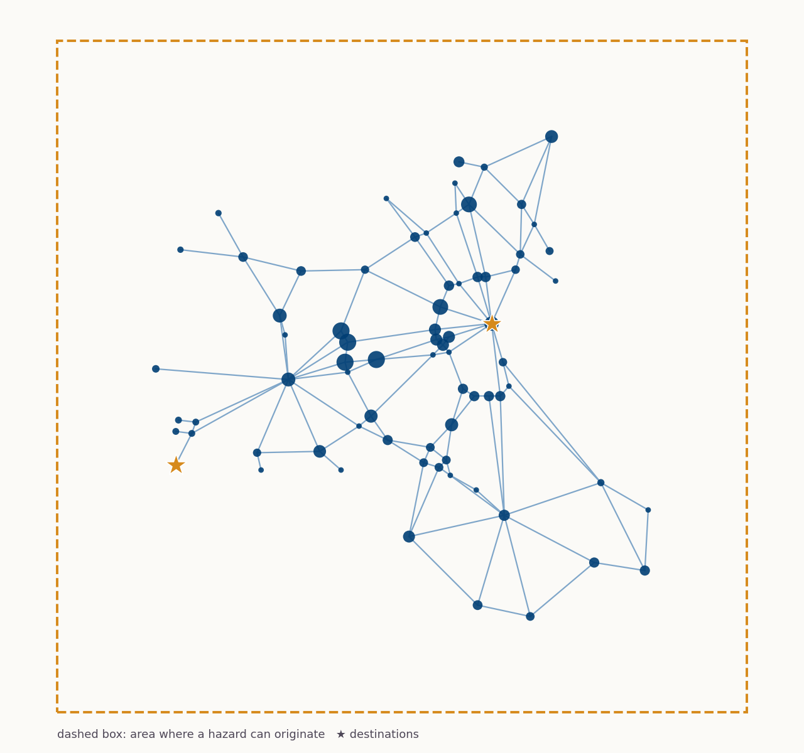
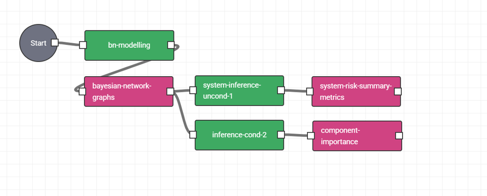
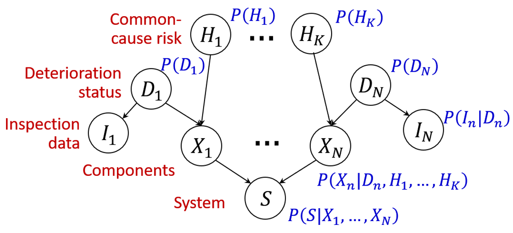

Probabilistic Risk of Complex Infrastructure Networks
Bringing a framework that uses probability-based modelling to assess the system-level risk of transport networks,
working out how likely the system as a whole is affected by hazards, based on the fragility of its individual components. The
project aims to show how the DAFNI platform can bring together different sectors to collaborate on managing risk in the
complex networks that society depends on.
Bayesian network models for probabilistic infrastructure risk assessment

The Eastern Massachusetts (EMA) benchmark highway network used in the demonstrator: 74 nodes sized by population and 129 links. A hazard originates somewhere within the dashed support region, and the model tracks whether the population can still reach the two destination nodes, n22 and n66 (stars), as links are damaged.

The DAFNI workflow: from network data and hazard sequences through tensor-based Bayesian network modelling, sampling and ranking to deliver component importance measures that prioritise where to focus protection or recovery efforts.
Bayesian networks (BNs) are graphical probabilistic models whose visual structure makes them ideal for understanding how variables within a complex system interact with each other. Here, BNs are used for risk assessment to show how common-cause hazards and component deterioration affect single components and the wider system performance they are part of. By analysing the network, they reveal which parts of the network matter most to keeping the system resilient. The Fellowship develops and applies this approach on DAFNI, using the Eastern Massachusetts highway (EMA) network as a demonstrator of how it works under real-world challenges like earthquake and windstorm hazards.
This methodology is built around the open-source tbnpy toolkit for tensor-based Bayesian networks, working to lower the adoption barrier and scalability limits of system risk tools. The Fellowship applies this through DAFNI, bringing together infrastructure operators, researchers and analysts to collaborate on risk assessment and decision-making for complex networks.
Model the network
Build a tensor-based Bayesian network on DAFNI: linking common-cause hazards, component deterioration, inspection data and component states to system-level performance, identifying where the network can still deliver and where it fails.
Find the critical links
Force each link to fail in turn and measure how the entire network performance changes, then rank links by standard importance measures to show where protection, repair or recovery effort would help most.
Apply to real networks
Demonstrate the approach on the Eastern Massachusetts highway network under earthquake and windstorm sequences, showing how the methodology scales to a real-world infrastructure challenge with dozens of nodes and links.
Test with stakeholders
Bring the model to infrastructure operators, planners and analysts through the workshop, to get feedback on whether the results are useful and how to make the tool work for their own networks.
Updates and milestones
Last updated: 9 November 2026
Fellowship begins
Work starts on moving the probabilistic network models onto the DAFNI platform.
Models published on DAFNI
Modelling and inference models available on the platform, with documented inputs and outputs.
Workshop
Half-day hands-on workshop for practitioners and researchers.
Fellowship ends
Final outputs, including the practical guide, released.
The models on DAFNI
At the core is a tensor-based Bayesian network that links hazards, component deterioration and system performance. Everything needed to build, run and interpret this model is packaged on DAFNI, so that others can check it, adapt it for their own networks and questions, and use it for risk assessment and decision-making.
The networks: the demonstrator is the Eastern Massachusetts highway network (74 nodes, 129 links), a real-world challenge showing how the method scales to practical infrastructure. A smaller 11-link illustrative network is also available for quick exploration and learning.
The hazards: an earthquake mainshock followed by up to ten aftershocks, or a windstorm with an initial peak followed by up to ten further gust peaks. In both, damage builds up over the sequence. The windstorm model is still being refined and its assumptions are documented.
The performance requirement: how much of the population must still be able to reach key destinations within a given travel time, with a standard and a stricter setting.
The models:
Modelling builds the tensor-based Bayesian network, linking common-cause hazard risk, deterioration status, inspection data and component states to system performance, and works out the boundary between adequate, degraded and failed performance.
Inference 1 samples the model forward to show its baseline behaviour.
Inference 2 forces each link to fail and measures how criticality changes over time.
Inference 3 ranks links by Birnbaum importance, Risk Achievement Worth and Risk Reduction Worth.
The code: the open-source tbnpy toolkit for tensor-based Bayesian networks, with online documentation.
ChooseA network, a hazard and a performance requirement
2
BuildThe probabilistic model and its performance boundaries
3
SampleHow the network behaves on average
4
RankThe model automatically compares each link broken or undamaged in turn, to work out a component-importance ranking under the chosen hazard
5
InterpretRead off which links matter most, to prioritise protection or recovery
Probabilistic Risk Modelling for Infrastructure Resilience
Full-day hands-on workshop · date to confirm · venue to confirm
The workshop brings together infrastructure operators, public bodies, analysts and researchers to get hands-on with Bayesian network models for infrastructure risk. Participants build a working understanding of probability and Bayesian network concepts from first principles, then apply them to a real-world case study: the Eastern Massachusetts highway network under earthquake and windstorm sequences. No prior background in probability or Bayesian networks is required—the day builds gradually from basic ideas through to driving the tool yourself and interpreting what it tells you about infrastructure resilience.

The tensor-based Bayesian network structure at the heart of the models: shared, common-cause hazards (H) and each component's deterioration status (D) drive its damage state (X); inspection data (I) can update deterioration status; and component states combine into system-level performance (S).
DateTo be confirmedFull day, 09:00 to 17:00
LocationTo be confirmedVenue and format to be announced.
FormatTalks, live demos and hands-onStarts from the basics, builds up to driving the tool yourself.
LevelNo background requiredOpen to anyone curious about infrastructure risk.
Build a working understanding of probability and Bayesian network concepts from first principles, and see how they apply to infrastructure risk.
Explore the tensor-based Bayesian network approach: from common-cause hazards and component deterioration through to system-level performance.
Apply the framework to a real case study—the Eastern Massachusetts highway network under earthquake and windstorm sequences—to see which links matter most to network resilience.
Gain the confidence to explore the tool yourself and identify how it could be useful for your own infrastructure challenges.
The workshop's output is participants' understanding of the approach and their feedback on it, which will shape the closing report.
Proposed programme (full day)
Welcome and an icebreakerExploring infrastructure resilience: which parts of a network matter most, and why?
Probability, from scratchA gentle, example-led primer on randomness, independence and conditional probability, the building blocks for everything that follows.
Thinking in Bayesian networksHow a diagram of circles and arrows captures cause and effect, built up live from a small worked example to the full network structure for infrastructure risk.
Morning break
Perspectives on infrastructure riskHow hazards such as earthquakes and storms are modelled, how infrastructure owners assess network risk today, and how Bayesian networks bring clarity to interdisciplinary collaboration.
The case study: Eastern Massachusetts highway networkApplying the Bayesian network to a real demonstrator—74 nodes and 129 links—under sequences of earthquakes and windstorms, from common-cause hazards and ageing components to whether people can still reach key destinations.
Lunch break
Inside the DAFNI pipelineHow the modelling, sampling and ranking models all use the same underlying Bayesian network structure, and how the tool automatically ranks components by importance under the chosen hazard.
Afternoon break
Hands-on: from guided to self-directedFollow a guided walkthrough of the DAFNI notebook using the Eastern Massachusetts case study, then explore on your own: choose scenarios, run the model, and see which links rank as most critical to network resilience.
Show and tellGroups share their findings from the case study and discuss what insights the network analysis reveals about infrastructure resilience.
Wrap up, Q&A and next stepsHow to apply Bayesian networks to your own infrastructure challenges, how to get access to the tool, and how your feedback shapes the Fellowship report.
Fellowship outputs
The Fellowship shares its work as it goes, and will close with a practical guide and a report bringing together the demonstrator, stakeholder feedback and experience of using DAFNI.
Conference poster
DAFNI poster
An overview of the Fellowship's approach and demonstrator, presented at the DAFNI community event.
Title to confirm. Running probabilistic network risk analyses on DAFNI.
Coming in 2027Planned output
Fellowship report
Title to confirm. Findings, workshop outcomes and recommendations for DAFNI.
Coming in 2027
Discuss the research or join the workshop
Expressions of interest are welcome from infrastructure operators, public bodies, researchers and DAFNI users.
Dr Ji-Eun Byun
Assistant Professor, Department of Civil & Environmental Engineering and Centre for Transport Engineering and Modelling, Imperial College London, UK j.byun@imperial.ac.ukMarta Zarantonello
PhD student, Department of Civil & Environmental Engineering and Centre for Transport Engineering and Modelling, Imperial College London, UK m.zarantonello@imperial.ac.uk